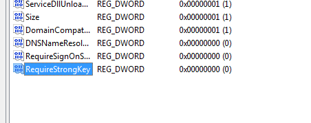

- Módulo: Administración de Sistemas Operativos
- Título del trabajo
- Componentes del grupo: Alejandro Garcia Yumar
- Curso Académico: 2015/2016
- Fecha de entrega: 13/03/2015
El ejercicio consiste en instalar y utilizar un servicio samba para emplearlo como servidor pdc.
Para empezar a trabajar debemos crear los distintos grupos de las maquinas, y los usuarios que representaran a estas.
Añadimos estos usuarios al samba.
Añadimos los grupos de usuarios.
Les asignamos las contraseñas.
Creamos los perfiles en las carpetas de samba.
Nos encargamos de rellenar el archivo smb.conf como la siguiente imagen.
Ahora solo debemos irnos a windows y asegurarnos que tenga el nombre como habiamos especificado en la practica, e intentamos conectarnos a nuestro dominio.
Nos saldra el siguiente error debido a una configuracion de windows 7.
Lo solucionamos poniendo esta informacion en el regedit, en la direccion HKEY_LOCAL_MACHINE\SYSTEM\CurrentControlSet\services\LanmanWorkstation\Parameters.
